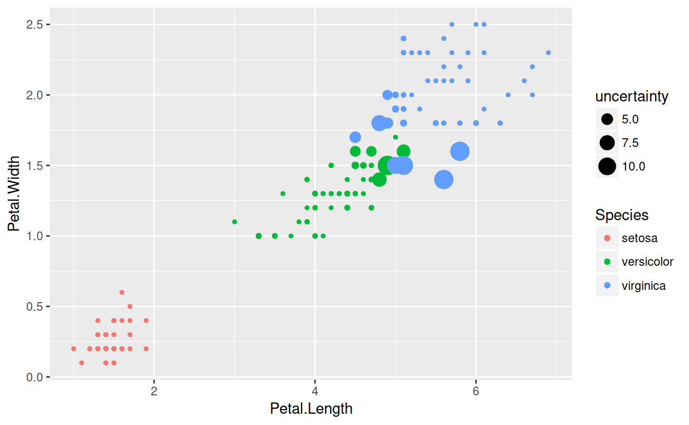

23.3 Bagging
Just as bootstrapping can estimate variability for statistics, it can also do so for predictions. This process is known as Bootstrap AGGrigation, or bagging. It turns out that, when doing bootstrap sampling, about 1/3 of the entries don’t make it into the resampled data set. These points are called out-of-bag (oob), and the rest are in-bag. We can use oob data like a free testing set. First a simple example to illustrate, then a non-trivial one.
mpgLm = lm(mpg ~ hp + wt, data = mtcars)
summary(mpgLm)
##
## Call:
## lm(formula = mpg ~ hp + wt, data = mtcars)
##
## Residuals:
## Min 1Q Median 3Q Max
## -3.941 -1.600 -0.182 1.050 5.854
##
## Coefficients:
## Estimate Std. Error t value Pr(>|t|)
## (Intercept) 37.22727 1.59879 23.285 < 2e-16 ***
## hp -0.03177 0.00903 -3.519 0.00145 **
## wt -3.87783 0.63273 -6.129 1.12e-06 ***
## ---
## Signif. codes: 0 '***' 0.001 '**' 0.01 '*' 0.05 '.' 0.1 ' ' 1
##
## Residual standard error: 2.593 on 29 degrees of freedom
## Multiple R-squared: 0.8268, Adjusted R-squared: 0.8148
## F-statistic: 69.21 on 2 and 29 DF, p-value: 9.109e-12b = 2000
oobPredictions = matrix(NA, nrow = nrow(mtcars), ncol = b)
for(i in 1:b){
resampleIndices = sample(1:nrow(mtcars), nrow(mtcars), replace = TRUE)
# use the set difference to find the out of bag indices
oobIndices = setdiff(1:nrow(mtcars), resampleIndices)
bootstrapMtcars = mtcars[resampleIndices, ]
oobMtcars = mtcars[oobIndices,]
bootstrapLm = lm(mpg ~ hp + wt, data = bootstrapMtcars)
oobPreds = predict(bootstrapLm, oobMtcars)
oobPredictions[oobIndices, i] = oobPreds
} oobPredictions[, 1:5]
## [,1] [,2] [,3] [,4] [,5]
## [1,] 22.494587 NA NA NA NA
## [2,] NA NA NA 22.96562 23.440193
## [3,] NA 26.11981 NA 25.36036 NA
## [4,] 19.798269 22.41944 21.68780 22.00558 22.124690
## [5,] NA NA 18.56648 NA 18.649486
## [6,] 18.786115 21.87208 NA NA NA
## [7,] NA NA NA NA NA
## [8,] 20.853263 NA 23.58794 NA 24.144853
## [9,] NA NA NA 22.91937 NA
## [10,] NA NA 20.54729 20.73738 NA
## [11,] NA NA NA 20.73738 NA
## [12,] NA NA 16.56916 NA NA
## [13,] NA NA 17.54429 17.14356 17.327081
## [14,] NA NA 17.40089 17.00238 NA
## [15,] 8.712622 11.28819 12.23258 NA NA
## [16,] NA NA NA 10.65639 9.370276
## [17,] 7.791647 NA NA NA NA
## [18,] 25.261098 NA NA NA NA
## [19,] 28.186763 30.36620 NA NA 30.639444
## [20,] 26.934760 NA 27.35984 NA NA
## [21,] 23.452033 NA NA NA NA
## [22,] 17.631370 NA NA NA 19.341744
## [23,] NA 19.78221 19.53314 NA 19.670620
## [24,] NA NA NA NA NA
## [25,] 15.668121 NA NA NA NA
## [26,] 26.461979 NA NA NA 28.840321
## [27,] NA NA NA NA 27.045361
## [28,] NA NA 26.45490 26.66537 NA
## [29,] NA 15.13692 NA 14.63539 NA
## [30,] 20.539619 20.71671 NA NA 21.241801
## [31,] NA 10.42526 NA 10.04940 11.735052
## [32,] NA NA 22.97348 NA 23.847832predict(mpgLm, mtcars[1,], interval = "confidence")
## fit lwr upr
## Mazda RX4 23.57233 22.45623 24.68843We see the bootstrap confidence interval is very close to the normal theory interval, as was the case above. This isn’t super useful for linear models, but gives us a way to measure uncertainty for models which don’t have a probability model to give us error bars, such as CART.
Now, we bag cart. We’ll use the very first example.
summary(classTree)
##
## Classification tree:
## tree(formula = Species ~ Sepal.Length + Sepal.Width + Petal.Length +
## Petal.Width, data = iris)
## Variables actually used in tree construction:
## [1] "Petal.Length" "Petal.Width" "Sepal.Length"
## Number of terminal nodes: 6
## Residual mean deviance: 0.1253 = 18.05 / 144
## Misclassification error rate: 0.02667 = 4 / 150
table(predict(classTree, type = 'class'), iris$Species)
##
## setosa versicolor virginica
## setosa 50 0 0
## versicolor 0 47 1
## virginica 0 3 49b = 2000
oobPredictions = matrix(NA, nrow = nrow(iris), ncol = b)
for(i in 1:b){
resampleIndices = sample(1:nrow(iris), nrow(iris), replace = TRUE)
# use the set difference to find the out of bag indices
oobIndices = setdiff(1:nrow(iris), resampleIndices)
bootstrapIris= iris[resampleIndices, ]
oobIris = iris[oobIndices,]
bsTree = tree(Species ~ Sepal.Length + Sepal.Width + Petal.Length + Petal.Width, data = bootstrapIris)
oobPreds = predict(bsTree, oobIris, type = 'class')
oobPredictions[oobIndices, i] = oobPreds
} Let’s look at some results!
oobPredictions[, 1:5]
## [,1] [,2] [,3] [,4] [,5]
## [1,] 1 NA 1 NA 1
## [2,] NA NA NA NA NA
## [3,] NA 1 1 NA 1
## [4,] 1 NA NA NA NA
## [5,] NA NA 1 NA 1
## [6,] 1 NA NA NA 1
## [7,] 1 NA 1 1 NA
## [8,] NA NA NA NA NA
## [9,] NA NA NA NA NA
## [10,] NA NA NA 1 NA
## [11,] NA NA NA NA NA
## [12,] NA NA 1 NA 1
## [13,] NA 1 1 NA NA
## [14,] NA NA 1 NA 1
## [15,] 1 1 1 NA 1
## [16,] 1 1 1 NA 1
## [17,] NA NA NA NA NA
## [18,] NA NA NA NA 1
## [19,] NA 1 NA 1 1
## [20,] NA NA NA 1 NA
## [21,] NA NA 1 NA 1
## [22,] 1 NA 1 1 NA
## [23,] NA NA NA 1 NA
## [24,] 1 1 1 1 NA
## [25,] NA NA 1 1 1
## [26,] 1 NA 1 NA NA
## [27,] NA NA NA NA 1
## [28,] NA 1 NA 1 1
## [29,] NA NA NA 1 1
## [30,] NA NA NA NA NA
## [31,] 1 NA NA 1 NA
## [32,] NA 1 1 1 1
## [33,] NA 1 NA NA NA
## [34,] NA 1 NA NA NA
## [35,] 1 1 NA NA 1
## [36,] NA NA NA 1 1
## [37,] 1 1 1 1 1
## [38,] NA 1 NA 1 NA
## [39,] NA NA NA 1 1
## [40,] 1 NA NA NA NA
## [41,] NA NA 1 NA NA
## [42,] NA NA NA 1 NA
## [43,] 1 1 1 NA 1
## [44,] 1 NA 1 NA 1
## [45,] 1 NA NA NA NA
## [46,] NA NA NA NA NA
## [47,] NA NA 1 1 NA
## [48,] NA 1 NA NA NA
## [49,] NA NA 1 NA 1
## [50,] NA 1 NA NA 1
## [51,] 2 NA NA 2 NA
## [52,] NA NA 2 NA NA
## [53,] NA NA 2 NA 2
## [54,] 2 NA 2 2 2
## [55,] NA NA 2 NA NA
## [56,] 2 NA NA NA NA
## [57,] NA NA NA 2 NA
## [58,] 2 NA NA NA NA
## [59,] NA NA NA 2 2
## [60,] NA NA NA NA 2
## [61,] 2 NA NA NA NA
## [62,] NA 2 NA NA NA
## [63,] NA 2 NA NA NA
## [64,] 2 NA 2 NA NA
## [65,] NA NA NA NA 2
## [66,] NA 2 NA NA NA
## [67,] NA NA NA NA NA
## [68,] NA NA NA NA 2
## [69,] 2 NA NA 2 NA
## [70,] NA 2 NA NA NA
## [71,] NA NA NA 3 3
## [72,] 2 NA NA 2 2
## [73,] 2 NA NA NA NA
## [74,] NA 2 NA 2 NA
## [75,] 2 NA 2 2 NA
## [76,] NA NA 2 NA NA
## [77,] NA NA NA NA 2
## [78,] NA NA 3 3 NA
## [79,] 2 NA 2 NA NA
## [80,] 2 NA NA 2 NA
## [81,] NA 2 2 NA 2
## [82,] 2 NA NA NA NA
## [83,] NA NA 2 NA NA
## [84,] NA 3 NA 3 NA
## [85,] NA 2 NA NA NA
## [86,] 2 3 NA NA NA
## [87,] 2 2 2 2 NA
## [88,] NA 2 NA NA NA
## [89,] 2 NA 2 2 NA
## [90,] NA NA NA NA NA
## [91,] NA 2 NA 2 NA
## [92,] NA NA NA 2 NA
## [93,] NA 2 2 NA NA
## [94,] NA 2 NA NA NA
## [95,] NA NA NA 2 2
## [96,] NA 2 2 NA NA
## [97,] 2 NA NA NA NA
## [98,] NA 2 2 NA 2
## [99,] 2 NA 2 NA 2
## [100,] NA NA 2 NA NA
## [101,] 3 NA 3 NA NA
## [102,] NA NA NA NA NA
## [103,] 3 NA 3 NA 3
## [104,] NA 3 3 3 3
## [105,] NA 3 NA NA NA
## [106,] NA 3 NA NA 3
## [107,] 2 NA NA NA NA
## [108,] NA 3 NA NA NA
## [109,] NA NA NA 3 NA
## [110,] 3 NA 3 NA NA
## [111,] 3 NA 3 NA 3
## [112,] NA NA 3 NA NA
## [113,] NA NA NA NA 3
## [114,] NA NA NA 3 3
## [115,] NA NA NA 3 NA
## [116,] 3 3 NA 3 3
## [117,] NA 3 3 NA NA
## [118,] 3 NA NA NA 3
## [119,] 3 NA 3 3 3
## [120,] 2 NA 3 3 NA
## [121,] NA 3 3 NA NA
## [122,] NA 3 NA NA NA
## [123,] NA NA NA 3 3
## [124,] 3 NA 3 NA NA
## [125,] NA 3 NA 3 NA
## [126,] NA NA 3 3 NA
## [127,] NA NA 3 NA NA
## [128,] NA 3 3 NA NA
## [129,] NA NA NA NA NA
## [130,] 2 NA NA NA NA
## [131,] NA 3 NA 3 NA
## [132,] 3 3 NA NA NA
## [133,] NA NA 3 NA 3
## [134,] 2 3 NA 3 2
## [135,] 2 NA NA NA NA
## [136,] NA 3 NA NA 3
## [137,] NA NA NA NA NA
## [138,] NA 3 3 NA NA
## [139,] 3 3 NA 3 3
## [140,] NA 3 NA 3 3
## [141,] NA NA 3 3 3
## [142,] 3 NA NA 3 NA
## [143,] NA NA NA NA 3
## [144,] NA NA 3 NA NA
## [145,] NA 3 NA NA NA
## [146,] 3 3 NA NA 3
## [147,] NA NA NA NA 3
## [148,] NA NA 3 NA NA
## [149,] 3 3 NA NA NA
## [150,] NA NA NA NA 3bsPreds = cbind(prob1 = apply(oobPredictions, 1, function(x) sum(x == 1, na.rm = TRUE)),
prob2 = apply(oobPredictions, 1, function(x) sum(x == 2, na.rm = TRUE)),
prob3 = apply(oobPredictions, 1, function(x) sum(x == 3, na.rm = TRUE)))
bsPreds = bsPreds / rowSums(bsPreds)
bsPreds = cbind(bsPreds, Species = iris$Species)
bsPreds[c(1:10, 51:60, 101:110), ]
## prob1 prob2 prob3 Species
## [1,] 1 0.000000000 0.000000000 1
## [2,] 1 0.000000000 0.000000000 1
## [3,] 1 0.000000000 0.000000000 1
## [4,] 1 0.000000000 0.000000000 1
## [5,] 1 0.000000000 0.000000000 1
## [6,] 1 0.000000000 0.000000000 1
## [7,] 1 0.000000000 0.000000000 1
## [8,] 1 0.000000000 0.000000000 1
## [9,] 1 0.000000000 0.000000000 1
## [10,] 1 0.000000000 0.000000000 1
## [11,] 0 0.998641304 0.001358696 2
## [12,] 0 1.000000000 0.000000000 2
## [13,] 0 0.556016598 0.443983402 2
## [14,] 0 0.995720399 0.004279601 2
## [15,] 0 0.985207101 0.014792899 2
## [16,] 0 0.998630137 0.001369863 2
## [17,] 0 0.882993197 0.117006803 2
## [18,] 0 0.995934959 0.004065041 2
## [19,] 0 1.000000000 0.000000000 2
## [20,] 0 0.998632011 0.001367989 2
## [21,] 0 0.000000000 1.000000000 3
## [22,] 0 0.002699055 0.997300945 3
## [23,] 0 0.000000000 1.000000000 3
## [24,] 0 0.001385042 0.998614958 3
## [25,] 0 0.000000000 1.000000000 3
## [26,] 0 0.000000000 1.000000000 3
## [27,] 0 0.848360656 0.151639344 3
## [28,] 0 0.001394700 0.998605300 3
## [29,] 0 0.001367989 0.998632011 3
## [30,] 0 0.000000000 1.000000000 3Congratulations, we just fit a random forest!
Let’s see where the model is uncertain.
uncertainty = apply(bsPreds[,1:3], 1, function(x) 1/var(x))
ggplot(data = iris) + geom_point(aes(x = Petal.Length, y = Petal.Width, col = Species, size = uncertainty))
As expected, the model is perfectly sure about setosa, but uncertain on the boundary between versicolo and virginica.